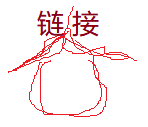

Windows Internet Explorer 9(缩写为 IE9 )是在2011年3月14日21:00发布的

text will must start !!!! !!!! !!!! !!!! !!!!
must
君不见黄河之水天上来，奔流到海不复还
君不见高堂明镜悲白发，朝如青丝暮成雪
电脑自动输出
text end
My car is blue.
My new car parragraph.is silver.
The World Wide Fund for Nature (WWF) is....
- by Refsnes Data. All Rights Reserved.
All content and graphics on this web site are the property of the company Refsnes Data.
Teletype text
学习 AJAX ,您必须熟悉 HttpRequest 对象。
拖动下面图片到矩形框中:
对图片来回拖动